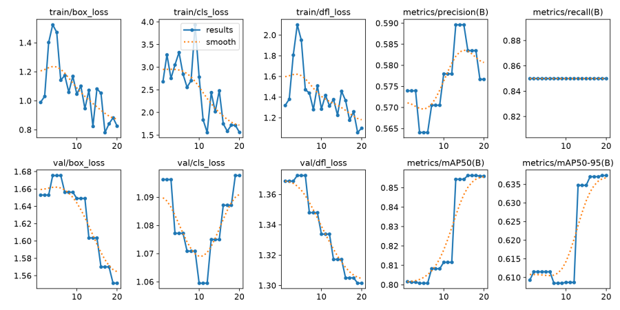
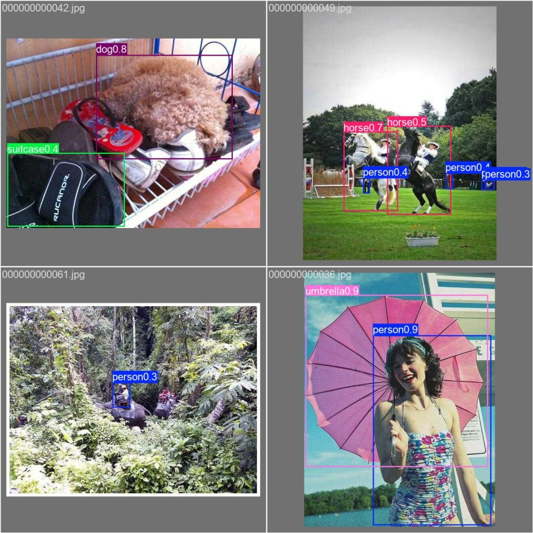
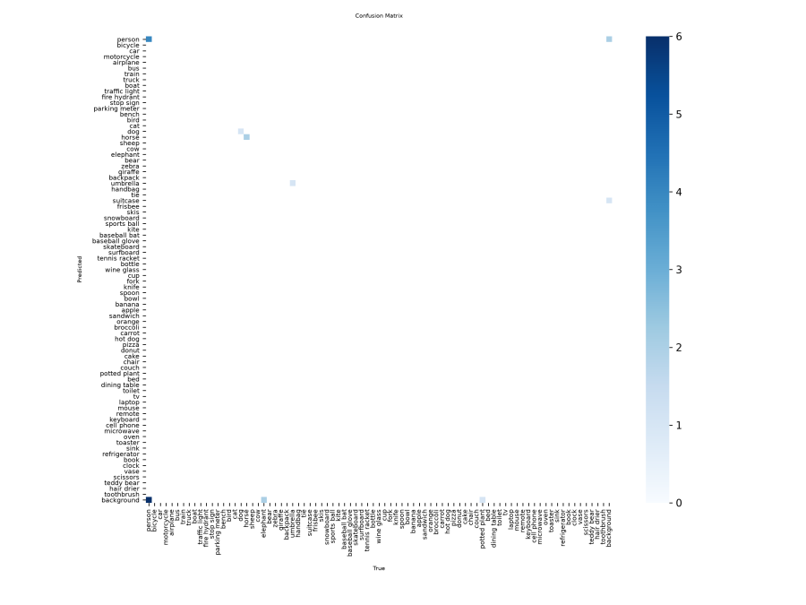

best.ptvenv\Scripts\activate)Ultralytics จะดาวน์โหลด Dataset ตัวอย่าง (COCO8 มี 8 ภาพ, เบามาก) ให้อัตโนมัติในขั้นตอน Train
cd Lab1_TrainReadyDataset\scripts .\train.bat
สคริปต์นี้เทียบเท่าคำสั่ง:
yolo detect train data=coco8.yaml model=yolo11n.pt epochs=20 imgsz=640
train.bat@echo off cd /d "%~dp0\..\.." call venv\Scripts\activate.bat yolo detect train data=coco8.yaml model=yolo11n.pt epochs=20 imgsz=640 echo Training finished. Check runs\detect\train\weights\best.pt pause
| cd /d "%~dp0\..\.." | %~dp0 คือโฟลเดอร์ที่ไฟล์ .bat วางอยู่ แล้ว ..\.. ถอยขึ้น 2 ชั้นไปที่โฟลเดอร์หลัก Yolo_tain — ทำให้ดับเบิลคลิกจากที่ไหนก็ทำงานถูก และผลลัพธ์ลงที่เดียวกันเสมอ |
| call venv\...\ | เข้า Virtual Environment ต้องมี call นำหน้า ไม่งั้นบรรทัดที่เหลือจะไม่ถูกรัน |
| data=coco8.yaml | ชื่อ dataset สำเร็จรูปของ Ultralytics — ไม่ใช่ไฟล์ในเครื่องเรา ถ้ายังไม่มีมันจะดาวน์โหลดให้เองอัตโนมัติ (~1 MB) |
| model=yolo11n.pt | โมเดลตั้งต้น ที่เทรนมาแล้วจาก COCO — เราไม่ได้เริ่มจากศูนย์ แต่เอาของที่เก่งอยู่แล้วมาปรับต่อ (เรียกว่า transfer learning) นี่คือเหตุผลที่เทรนด้วยภาพแค่ 8 ใบแล้วยังได้ผลใช้ได้ |
| epochs=20 | วนดูข้อมูลทั้งชุดซ้ำ 20 รอบ |
| imgsz=640 | ย่อ/ขยายทุกภาพเป็น 640x640 ก่อนป้อนเข้าโมเดล |
| ไม่มี project= / name= | ตั้งใจไม่ใส่ ปล่อยให้ผลลงที่ค่าเริ่มต้น runs\detect\train\ — ถ้าใส่ project= เป็น path แบบ relative ผลลัพธ์จะไปซ้อนกันเป็น runs\detect\<project>\... ซึ่งทำให้ Lab ถัดไปหาไฟล์ไม่เจอ |
Ultralytics 8.4.131 Python-3.13.14 torch-2.6.0+cu124 CUDA:0 (NVIDIA GeForce RTX 3050 Ti Laptop GPU, 4096MiB)
engine\trainer: agnostic_nms=False, amp=True, ... epochs=20, ... imgsz=640, ...
from n params module arguments
0 -1 1 464 ultralytics.nn.modules.conv.Conv [3, 16, 3, 2]
...
Freezing layer 'model.23.dfl.conv.weight'
AMP: running Automatic Mixed Precision (AMP) checks...
AMP: checks passed
train: Scanning ...\coco8\labels\train.cache... 4 images, 0 backgrounds, 0 corrupt
val: Scanning ...\coco8\labels\val.cache... 4 images, 0 backgrounds, 0 corrupt
optimizer: 'optimizer=auto' found, ignoring 'lr0=0.01' and 'momentum=0.937' ...
optimizer: AdamW(lr=0.000119, momentum=0.9) with parameter groups 81 weight(decay=0.0), ...
Using 4 train, 4 val images for fraction=1.0 at imgsz=640
Logging results to C:\dev\Yolo_tain\runs\detect\train
Starting training for 20 epochs...
| บรรทัด | บอกอะไร |
|---|---|
engine\trainer: ... | รายการค่าตั้งต้นทั้งหมดที่ใช้เทรนรอบนี้ (ยาวมาก) — ค่าที่เราไม่ได้ระบุ Ultralytics เติมค่า default ให้ ค่าเดียวกันนี้ถูกเซฟไว้ที่ runs\detect\train\args.yaml ด้วย ไว้ย้อนดูทีหลังว่ารอบนั้นตั้งอะไรไว้ |
from n params module | ตารางโครงสร้างโมเดลทีละเลเยอร์ ปกติไม่ต้องอ่าน |
AMP: checks passed | เปิดใช้ Automatic Mixed Precision — คำนวณบางส่วนด้วยเลขทศนิยม 16 บิตแทน 32 บิต ทำให้เร็วขึ้นและกิน VRAM น้อยลง โดยความแม่นยำแทบไม่ต่าง (ถ้าการ์ดจอไม่รองรับ มันจะข้ามไปเอง) |
Scanning ... 4 images, 0 backgrounds, 0 corrupt | บรรทัดที่ต้องดูทุกครั้ง — บอกว่าเจอภาพกี่ใบ, กี่ใบไม่มี label (backgrounds), กี่ใบไฟล์เสีย ถ้าตัวเลขไม่ตรงกับที่คิด แปลว่า dataset มีปัญหา ให้หยุดแก้ก่อน.cache ต่อท้ายแปลว่าเคยสแกนแล้ว รอบนี้อ่านจากแคช |
optimizer=auto → AdamW(lr=0.000119) | Ultralytics เลือก optimizer และ learning rate ให้เอง จึงมองข้ามค่า lr0/momentum ที่ตั้งมา — ถ้าอยากคุมเอง ต้องระบุ optimizer=SGD หรือ optimizer=AdamW ตรง ๆ (จะได้ลองใน Lab 4) |
Epoch GPU_mem box_loss cls_loss dfl_loss Instances Size
13/20 0.705G 1.073 2.439 1.378 13 640: 100% 1/1
Class Images Instances Box(P R mAP50 mAP50-95)
all 4 17 0.59 0.85 0.854 0.635
| คอลัมน์ | ความหมาย |
|---|---|
13/20 | รอบที่ 13 จาก 20 |
GPU_mem | VRAM ที่ใช้อยู่ — ตัวเลขที่ต้องจับตา ถ้าใกล้เต็มการ์ด (เช่น 3.9G บนการ์ด 4GB) ให้ลด batch หรือ imgsz ก่อนเจอ CUDA out of memory |
box_loss | ตำแหน่ง/ขนาดกรอบยังผิดอยู่เท่าไร |
cls_loss | ทายคลาสผิดอยู่เท่าไร |
dfl_loss | ความคลาดเคลื่อนของขอบกรอบแบบละเอียด |
Instances | จำนวนวัตถุใน batch นั้น (ไม่ใช่จำนวนภาพ) |
| ทั้ง 3 loss ควรมีแนวโน้มลดลง — ขึ้น ๆ ลง ๆ ระหว่างทางเป็นเรื่องปกติ โดยเฉพาะ dataset เล็ก ให้ดูแนวโน้มรวม ไม่ใช่ค่าราย epoch | |
Box(P) Precision | ในกรอบที่โมเดลทายมา ถูกจริงกี่ % (ทายมั่วเยอะ = ค่านี้ต่ำ) |
R Recall | ในของจริงทั้งหมด โมเดลหาเจอกี่ % (มองข้ามเยอะ = ค่านี้ต่ำ) |
mAP50 | ตัวเลขหลักที่ใช้เทียบโมเดล — ความแม่นยำเมื่อถือว่ากรอบทับกับของจริงเกิน 50% ก็นับว่าถูก |
mAP50-95 | เข้มงวดกว่า เฉลี่ยตั้งแต่เกณฑ์ 50% ถึง 95% — ค่านี้จะต่ำกว่า mAP50 เสมอ |
20 epochs completed in 0.003 hours.
Optimizer stripped from ...\weights\last.pt, 5.5MB
Optimizer stripped from ...\weights\best.pt, 5.5MB
Validating ...\weights\best.pt...
YOLO11n summary (fused): 101 layers, 2,616,248 parameters, 0 gradients, 6.5 GFLOPs
all 4 17 0.578 0.85 0.855 0.654
person 3 10 0.613 0.6 0.608 0.307
dog 1 1 0.386 1 0.995 0.796
horse 1 2 0.701 1 0.995 0.671
elephant 1 2 0.412 0.5 0.54 0.257
umbrella 1 1 0.545 1 0.995 0.995
potted plant 1 1 0.808 1 0.995 0.895
Speed: 0.4ms preprocess, 4.3ms inference, 0.0ms loss, 1.1ms postprocess per image
Results saved to C:\dev\Yolo_tain\runs\detect\train
Optimizer stripped | ตัดข้อมูลที่ใช้เฉพาะตอนเทรนออกจากไฟล์โมเดล ทำให้ไฟล์เล็กลงเหลือ 5.5MB — ไฟล์ที่ได้เอาไปใช้ทำนายได้เลย แต่เอาไปเทรนต่อจากจุดเดิมไม่ได้ |
Validating best.pt | วัดผลรอบสุดท้ายด้วยโมเดลที่ดีที่สุด (ไม่ใช่โมเดลของ epoch สุดท้าย) |
| ตารางแยกรายคลาส | ส่วนที่มีประโยชน์ที่สุด — เห็นว่าคลาสไหนอ่อน เช่นในตัวอย่างนี้ person ได้ mAP50 แค่ 0.608 ทั้งที่มีตัวอย่างเยอะสุด (10 ชิ้น) ส่วน umbrella ที่มีแค่ชิ้นเดียวกลับได้ 0.995เหตุผลคือคนในภาพมีหลายท่า หลายขนาด บางคนถูกบัง จึงยากกว่ามาก — ในโครงงานจริง ให้ดูตารางนี้เพื่อรู้ว่าควรไปเก็บภาพเพิ่มของคลาสไหน |
Speed: ... 4.3ms inference | เร็วกว่าตอน predict ภาพเดี่ยว เพราะวัดจากการรันเป็น batch และโมเดลอุ่นเครื่องแล้ว |
ผลลัพธ์ทั้งหมดอยู่ที่ runs\detect\train\:
results.png — กราฟ loss และ mAP รายรอบ
| สิ่งที่เห็น | อ่านว่าอย่างไร |
|---|---|
| loss ฝั่ง train ทั้ง 3 ตัวลดลง แต่กระโดดขึ้นลงแรง | ปกติสำหรับ dataset จิ๋วแค่ 4 ภาพ — แต่ละรอบเห็นภาพชุดเดิมที่ถูกแต่งต่างกัน ค่าเลยเหวี่ยง ดูแนวโน้มรวมว่าลดลงก็พอ |
val/cls_loss ลดลงถึงรอบ ~11 แล้วกลับเพิ่มขึ้น | นี่คือสัญญาณ overfitting — โมเดลเริ่มจำภาพ 4 ใบนั้นได้แทนที่จะเรียนรู้ลักษณะทั่วไป ค่าฝั่ง train ยังดูดีขึ้นแต่ฝั่ง val แย่ลง ในงานจริงถ้าเห็นแบบนี้ ให้ลด epochs หรือเพิ่มจำนวนภาพ — และนี่คือเหตุผลที่ต้องแบ่ง val ออกมาต่างหาก ถ้าดูแต่ค่าฝั่ง train จะไม่มีวันเห็นปัญหานี้เลย |
mAP50 นิ่งที่ ~0.80 แล้วกระโดดขึ้น 0.85 ตอนรอบ 12-13 | การเรียนรู้ไม่ได้ค่อย ๆ ดีขึ้นเป็นเส้นตรง มักนิ่งไปพักหนึ่งแล้วขยับทีเดียว — อย่าเพิ่งด่วนสรุปว่าไม่เวิร์กแล้วหยุดกลางคัน |
metrics/recall เป็นเส้นตรงแบน 0.85 | เป็นผลของการมีภาพ val แค่ 4 ใบ (17 วัตถุ) จำนวนที่หาเจอเลยไม่เปลี่ยนเลยทั้ง 20 รอบ — เห็นชัดว่าชุด val ที่เล็กเกินไปทำให้ตัวเลขไม่มีความหมาย จำภาพเส้นแบนนี้ไว้ — ใน Lab 4 เราจะเทรนโจทย์เดียวกันสองรอบ รอบหนึ่งด้วยภาพ 20 ใบ อีกรอบด้วยภาพพันกว่าใบ แล้วเอาตัวเลขมาเทียบกันตรง ๆ ว่าจำนวนข้อมูลมีผลแค่ไหน |
val_batch0_pred.jpg — โมเดลทายอะไรบ้าง
val_batch0_labels.jpg ในโฟลเดอร์เดียวกันที่เป็นเฉลยval_batch0_labels.jpg = เฉลย, val_batch0_pred.jpg = คำตอบของโมเดล) เป็นวิธีที่เร็วที่สุดในการดูว่าโมเดลพลาดแบบไหน — กรอบเบี้ยว? ทายคลาสสลับกัน? หรือมองข้ามวัตถุไปเลย? ตัวเลข mAP บอกแค่ว่า "แย่" แต่ภาพคู่นี้บอกว่า "แย่ยังไง"confusion_matrix.png — สับสนระหว่างคลาสไหน
คอลัมน์/แถว background คือจุดที่ควรดูเป็นพิเศษ: ช่องแถว background = ของจริงมีแต่โมเดลมองไม่เห็น (missed) ส่วนช่องคอลัมน์ background = โมเดลทายกรอบขึ้นมาทั้งที่ไม่มีอะไร (false positive) — สองช่องนี้บอกทิศทางแก้ได้ตรงกว่าตัวเลข mAP
model=yolo11n.pt เป็น yolo11s.pt เพื่อเปรียบเทียบขนาดโมเดลกับความแม่นยำ (n=nano เร็วสุด, s=small แม่นขึ้นแต่ช้าลง)| เรื่อง | รายละเอียด / วิธีแก้ |
|---|---|
รัน train.bat ซ้ำแล้วผลไม่อยู่ที่ train\ |
YOLO ไม่เขียนทับของเดิม แต่สร้างโฟลเดอร์ใหม่เพิ่มเลข: train2, train3 ... ให้ดูโฟลเดอร์ล่าสุด (หรือลบ runs\detect\train* ทิ้งก่อนรันใหม่) |
CUDA out of memory (การ์ด VRAM น้อย เช่น 4 GB) |
มักเกิดเมื่อเปลี่ยนไปโมเดลใหญ่ (yolo11s/m) — ลด batch เช่น เพิ่ม batch=4 ต่อท้ายคำสั่ง หรือใช้ imgsz=416 |
| Train บน CPU (ไม่มี GPU) | ทำได้แต่ช้ากว่ามาก — COCO8 ยังไหว เพราะมีแค่ 8 ภาพ; ยืนยันว่าใช้ GPU ได้จากบรรทัด CUDA:0 (...) ตอนเริ่ม Train |
ดาวน์โหลด yolo11n.pt / COCO8 ไม่ได้ |
เกิดจากเน็ต — Ultralytics ดาวน์โหลดให้อัตโนมัติครั้งแรก ลองรันซ้ำเมื่อเน็ตพร้อม |
best.pt ที่ runs\detect\train\weights\ พร้อม mAP50 ≈ 0.85 บนชุด val (COCO8 เป็น dataset จิ๋วไว้ทดสอบ pipeline ไม่ใช่วัดความแม่นจริง)runs\detect\train\weights\best.pt